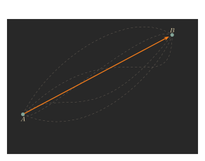
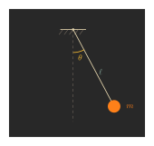

Physics is usually taught with cause and effect. In Newtonian mechanics, forces cause an object to change its motion. And Newtonian mechanics is an incredibly successful theory of physics, which can explain huge amounts of observations about the world.
Newton mechanics describes the world moment-by-moment: it tells you how to, given the current state of the world, calculate what the world will be like at the very next instant.
But sometimes the moment-by-moment answers which Newtonian mechanics gives obey strange properties in the long term. For example, light always takes the fastest path between two points. It is mysetrious that, when you let light evolve according to the moment-by-moment rules of Newton, a special overall property emerges.
Light always taking the fastest path is not the only optimization problem you see in physics. Soap bubbles and rain drops tend to become round, because the sphere is the most efficient shape at enclosing any given volume: of all shapes of a fixed volume, the sphere will have the smallest surface area.
This led Lagrange to wonder: can one re-formulate physics in terms of optimization problems, instead of cause-and-effect? It is perhaps counter-intuitive to think this way at first, but Lagrange's formalism ends up having immense power. Next week, for example, we will use Lagrange's formalism of physics to explain Emmy Noether's wonderful discovery that symmetries of the universe correspond to conservation laws (conservation of energy, momentum, and angular momentum). Noether's theorem is very tricky to derive from Newtonian mechanics, but becomes conceptually transparent once you use Lagrangian mechanics.
Lagrange's first insight was that nature is lazy. Nature will always try to be as efficient as possible, for some metric of efficiency: with light, that metric was 'least time to travel,' and with soap bubbles, that metric was 'least surface area.' But how do you figure out that time is the thing to minimize with light, and surface area is the thing to minimize with soap bubbles? Lagrange's next insight was how to determine this; but before explaining his solution, let's review Newtonian mechanics.
In Newtonian mechanics, the most important things to know about a particle are its position, velocity, and mass.
The position is the simplest to explain: it is just where the particle is in space. It is typically represented as a vector with three components; let's say our particle has position \(\vec x = (x_1, x_2, x_3).\) We live in 3-dimensional space, which is why we need three numbers to keep track of positions.
Newtonian mechanics tells you how the world evolves from one moment to the other. One of Newton's big insights (called one of his laws of motion) is the idea that, by default, every particle moves in a straight line, at a constant speed. To record this, we write down the particle's velocity: this is another vector \(\vec v = (v_1, v_2, v_3),\) whose direction tells us which way the particle moves, and whose length \(\sqrt{v_1^2+v_2^2+v_3^2}\) tells us the constant speed at which the particle moves.
However, throughout your life you have observed many objects which do not move in straight lines. This is because, while particles move in straight lines with constant speed by default, a particle's motion can be altered by factors like gravity, or another particle colliding with it.
The most important equation of Newtonian mechanics, then, is the one which tells you how to compute how the velocity changes from one moment to the next. Newtonian mechanics roughly says that, when going from one instant to another, every object moves in a straight line at constant speed, but the direction of motion and speed of motion can both change from instant to instant.
To calculate how velocity changes, one needs to know two things about the particle: its mass, a fundamental property of the particle itself; and the forces acting on it. The forces acting on a particle can change constantly, and are not intrinsic to the particle itself -- they are just whatever other entities of the universe are currently interfering with your particle's desire to move in a straight line.
Forces, like velocity and position, are vectors; the fundamental equation of Newtonian mechanics is \[\vec F = m \cdot \frac{d\vec v}{dt},\] where \(\vec F\) is the sum of all forces acting on your object.
In other words, \[\frac{d\vec v}{dt} = \frac{1}{m}\vec F,\] so that if you want to know how your particle's velocity changes from moment-to-moment, you only need to know its mass, and the sum \(\vec F\) of all forces acting on it at that moment.
Newton's equation is often written \(F = ma,\) where \(a\) (acceleration) is just an abbreviation for the derivative \(d\vec v/dt.\)
In practice, Newtonian mechanics can be tricky to use: solving the differential equation \[\frac{d\vec v}{dt} = \frac{1}{m}\vec F\] is often tricky, and -- as any physics undergraduate student will complain -- it can be quite complicated to calculate all the forces acting on an object to determine \(\vec F.\) However, Newtonian mechanics is remarkably powerful, and humans have managed to use it in all sorts of accurate predictions about nature.
With Newtonian physics out of the way, let's finally explain Lagrange's approach. As we recall from the introduction, Lagrangian mechanics is based on the idea that nature is "lazy" in the sense that it is as efficient as possible. But what is the metric of efficiency?
We will derive this using Newtonian mechanics. In Newtonian mechanics, the most important things to know about a particle are its position, velocity, and mass. So, let's say our metric of efficiency is some function \[L(\vec x, \vec v, m).\] Here, \(\vec x\) is the position, \(\vec v\) is the velocity, and \(m\) is the mass, just like above.
Imagine at every moment in time \(t\) we expend some "cost" \(L(\vec x,\vec v,m)\). Then, as our physical system evolves from time \(t_0\) to \(t_1\), we expend a total cost of \[S = \int_{t_0}^{t_1} L(\vec x(t), \vec v(t), m) \, dt.\] Here \(\vec x(t)\) and \(\vec v(t)\) are the position and velocity of our particle at time \(t.\) We are frugal and want to minimize this "total cost" \(S\). So let's try to find a function \(L\) such that solving Newton's equation \(F = ma\) is equivalent to minimizing \(S\).
You might know how to minimize a function, say \(x^2-3x\). But notice that we are trying to solve a much crazier problem right now! When we are trying to minimize \(x^2-3x\), we are allowed to vary \(x\) in any way: we could let it be \(1\), or \(-2\), or \(3\). But Lagrange is trying to minimize some function \(S\) which depends on functions like \(x_1(t)\).

In this picture, \(\vec x(t)\) is allowed to be anything as long as at the start \(\vec x(t_0)=A\), and at the end \(\vec x(t_1)=B\). That means (letting \(t_0=0\)) we are free to choose each of the values \[ x_1(0.01),\ \ x_1(0.02),\ \ x_1(0.03)\] freely! You could let \[ x_1(0.01)=2.5,\ \ x_1(0.02)=-\pi,\ \ x_1(0.03)=20\] or \[ x_1(0.01)=-0.7,\ \ x_1(0.02)=-5,\ \ x_1(0.03)=-2,\] or, or, or, ... It seems almost impossible to minimize a function over such a big space of possibilities!Before trying to minimize the action, let's review how we minimize usual functions.
But wait... how do we actually minimize a complicated expression like \(S\)?
Let's start with a simple example: minimizing \(f(x)=x^3-x^2-x+2\).

Take a point \(x_0.\) One of the fundamental ideas of calculus, called Fermat's principle, is that we can use the derivative to understand if \(x_0\) has the potential to be the point at which \(f(x)\) achieves its minimum value.
Recall that the derivative is just the best linear approximation to our function; so \[f(x_0 + \epsilon) \approx f(x_0) + f'(x_0)\epsilon,\] where \(\epsilon\) is some small perturbation applied to our original input \(x_0.\)
If \(f'(x_0)\) is a negative number, then if \(\epsilon\) is a small positive number, then \(f(x_0+\epsilon)\) will be a little smaller than \(f(x_0).\) For example, if \(f'(x_0) = -4\) and \(\epsilon = 0.01,\) then \[f(x_0 + 0.01) \approx f(x_0) - 0.04,\] which is a little smaller than \(f(x_0).\)
Thus, if \(f'(x_0) \lt 0,\) then \(f(x_0)\) cannot be the minimum value of \(f\), as moving right makes the value lower.
Similarly, if \(f'(x_0) \gt 0,\) then \(f(x_0)\) also cannot be the minimum value of \(f\), as moving left would make the value lower.
We have thus derived Fermat's principle: if you want to minimize a function, you need only study the points where its derivative is zero.
For our function \(f(x)=x^3-x^2-x+2\), the derivative is \[ f'(x_0)=3x_0^2-2x_0-1. \]
Setting \(f'(x_0) = 0\) then gives us the quadratic equation \[3x_0^2 - 2x_0 - 1 = 0.\] This quadratic has two solutions: \(x_0 = -\frac{1}{3},\) or \(x_0 = 1.\)
From here, Fermat's principle is of no further help, and you have to examine these points individually to see which -- if either! -- is the minimum. However, note how the derivative has narrowed our search down considerably: instead of trying every real number, we only have to test out two!
Going back to Lagrange, letting \(L(\vec x, \vec v, m)\) be some mystery function, let's try to minimize \[S = \int_{t_0}^{t_1} L(\vec x(t), \vec v(t), m) \, dt.\]
Suppose our particle's path \((\vec x(t), \vec v(t))\) minimizes \(S.\) Then, by Fermat's principle, small perturbations of this path should make \(S\) larger. So let's try perturbing the path \(\vec x(t)\) to \(\vec x(t)+\vec\epsilon(t)\). The key difference with the previous section is that \(\vec\epsilon(t)\) is no longer a single number: it is some (small) function!
If \[\vec x(t) + \vec \epsilon(t)\] is a small perturbation of our original position, then velocity is perturbed as \[\vec v(t) + \vec{\epsilon}^{\,\prime}(t),\] and this new path should have \[\int_{t_0}^{t_1} L(\vec x(t) + \vec \epsilon(t), \vec v(t) + \vec{\epsilon}^{\,\prime}(t), m) \, dt \geq \int_{t_0}^{t_1} L(\vec x(t), \vec v(t), m) \, dt.\]
Using the derivatives of \(L,\) we can form the approximation \[L(\vec x(t) + \vec \epsilon(t), \vec v(t) + \vec{\epsilon}^{\,\prime}(t), m) \approx L(\vec x(t), \vec v(t), m) + \frac{\partial L}{\partial x}(\vec x(t)) \cdot \epsilon(t) + \frac{\partial L}{\partial v}(\vec v(t)) \cdot \vec{\epsilon}^{\,\prime}(t).\]
Thus our inequality can be rearranged to read \[\int_{t_0}^{t_1} \frac{\partial L}{\partial x}(\vec x(t)) \cdot (\vec \epsilon(t)) + \frac{\partial L}{\partial v}(\vec v(t)) \cdot (\vec{\epsilon}^{\,\prime}(t)) \, dt \geq 0.\]
Integration by parts allows us to write \[\int_{t_0}^{t_1} \frac{\partial L}{\partial v}(\vec v(t)) \cdot (\vec{\epsilon}^{\,\prime}(t)) \, dt = -\int_{t_0}^{t_1} \vec\epsilon(t) \frac{d}{dt}\left(\frac{\partial L}{\partial v}(\vec v(t))\right) \, dt.\]
Thus our inequality can again be rewritten to read \[\int_{t_0}^{t_1} \vec\epsilon(t) \cdot \left(\frac{\partial L}{\partial x}(\vec x(t)) - \frac{d}{dt}\frac{\partial L}{\partial v}(\vec v(t))\right) \, dt \geq 0.\]
As in Fermat's principle, the only way this could happen for every possible pertubation \(\epsilon(t)\) is if \[\frac{\partial L}{\partial x}(\vec x(t)) - \frac{d}{dt}\frac{\partial L}{\partial v}(\vec v(t)) = 0\] for all times \(t.\)
This gives the Euler-Lagrange equation: to minimize \[S = \int_{t_0}^{t_1} L(\vec x(t), \vec v(t), m) \, dt,\] you need to find a solution to \[\frac{\partial L}{\partial x}(\vec x(t)) = \frac{d}{dt}\frac{\partial L}{\partial v}(\vec v(t)).\]
We want to choose our function \(L\) in such a way that we recover Newton's equations. So, let's try to pick \(L\) such that the Euler-Lagrange equation above becomes \[F(\vec x(t)) = m\frac{d \vec v(t)}{dt} = \frac{d}{dt}(m\vec v(t)).\] Here, we view \(F\) as being a function of \(\vec x,\) because the force of our particle depends on its position in space; we think of \(F\) as being some time-independent force, like gravity: gravity depends on your location, but not on what time it is.
Comparing Newton's equation to the Euler-Lagrange equation, it seems we should choose \(L\) so that \[\frac{\partial L}{\partial \vec x}(\vec x) = F(\vec x),\] \[\frac{\partial L}{\partial \vec v}(\vec v) = m\vec v.\]
The second of the above two equations is easy to solve. Let \(\|\vec v\|=\sqrt{v_1^2+v_2^2+v_3^2}\) denote the length of the vector \(\vec v=(v_1,v_2,v_3).\) By the product rule, because \(\|\vec v\|^2 = \vec v \cdot \vec v,\) we have \[\frac{\partial}{\partial v}(\|\vec v\|^2) = 2\vec v,\] so that \[\frac{\partial}{\partial v}\left(\frac{1}{2}m\|\vec v\|^2\right) = m\vec v.\]
The quantity \[T = \frac{1}{2}m\|\vec v\|^2\] is called the kinetic energy in Newtonian mechanics, and is an incredibly important quantity. So, our function \(L\) ought to have a term involving the potential energy.
However, the equation \(\partial L/\partial\vec v = m\vec v\) we just solved only tells us about the terms of \(L\) involving \(\vec v.\) We still don't know about the terms of \(L\) which involve \(\vec x\)! For that, we go to our first equation, \[\frac{\partial L}{\partial \vec x}(\vec x) = F(\vec x).\]
In Newtonian mechanics, a commonly used quantity is the potential energy. Intuitively, potential energy measures how much work the forces acting on your particle would have to do to move your particle in the way they desire. For example, if gravity is acting, then your particle will have gravitational potential energy depending on how high it is: gravity wants to pull your particle down, but gravity has to do a certain amount of work to pull it down; gravitational potential energy is just a measure of how much work gravity would have to do to pull your object down. A ball held very high up has more gravitational potential energy than that same ball held closer to the ground.
The reason we mention potential energy is because it is defined as the anti-derivative of \(-F(\vec x).\) That is, potential energy is some function \(V(\vec x)\) so that \[\frac{\partial V}{\partial \vec x}(\vec x) = -F(\vec x).\]
Putting these two terms together, we get the Lagrangian \[L(\vec x, \vec v, m) = T - V.\] This is Lagrange's formulation of the laws of motion: a particle always moves in a path which minimizes the action integral \[S = \int_{t_0}^{t_1} L(\vec x(t), \vec v(t), m) \, dt\] where \(L = T - V.\)
To end, we are going to give an example of how to use Lagrangian mechanics to solve a physics problem.
Imagine a pendulum with a string of length \(\ell\) and an object of mass \(m\) attached to the end, as drawn below.

While in our derivation of Lagrangian mechanics we used standard 3-dimensional coordinates, for this physical system it's helpful to only remember one coordinate: the angle \(\theta\) which the pendulum makes with some reference line.
The velocity of the particle at the end of our rope is given by \[v = \ell\frac{d\theta}{dt}.\] This is because how fast the mass moves depends both on how long the string is and on how much the angle \(\theta\) moves.
From here, we can figure out the kinetic energy term in the Lagrangian: \[ T = \frac12mv^2=\frac12m(\ell\dot\theta)^2. \] Here \(\dot\theta\) is physics notation for the time-derivative \(\frac{d\theta}{dt}\).
To figure out the potential energy term in the Lagrangian, we need to specify which forces are acting on our pendulum. Let's assume the only force is gravity. Newton, in his deep studies of gravity, determined that the potential energy of gravity on Earth is equal to \[V = mgh,\] where \(m\) is the mass, \(h\) is the height of the object above the surface of the Earth, and \(g \approx 10 \frac{\text{meters}}{\text{second}^2}\) is an experimentally observed constant coming from the strength of Earth's gravitational field.
We make a remark: \(V\) was defined as the anti-derivative of force, so it is only defined up to a constant: if \(A(x)\) is an antiderivative of \(-F(x),\) then \(A(x) + 23\) is also an antiderivative of \(-F(x),\) for example.
Similarly, 'height' is ambiguous: do we mean height above sea level? Height above the ground? Notice that height and \(V\) are ambiguous in the exact same way: both are ambiguous up to adding a constant. So, let's just fix this constant by saying that, in our example, 'height' means distance above (or below) the pivot point of our pendulum.
Then trigonometry tells us that the height of our particle is \(-\ell\cos\theta\), so the gravitational potential is \(V = -mg\ell\cos\theta\). Putting this all together, the Lagrangian is \[ L=T-V=\frac12m(\ell\dot\theta)^2-(-mg\ell\cos\theta)=\frac12m\ell^2\dot\theta^2+mg\ell\cos\theta. \]
From here, the Euler-Lagrange equation tells us \[ \frac{\partial L}{\partial\theta}=\frac d{dt}\bigg(\frac{\partial L}{\partial\dot\theta}\bigg). \] The derivative of the Lagrangian with respect to \(\theta\) is \[ \frac{\partial L}{\partial\theta}=-mg\ell\sin\theta. \] On the other hand, the derivative of Lagrangian with respect to \(\dot\theta\) is \[ \frac{\partial L}{\partial\dot\theta}=m\ell^2\dot\theta, \] so \[ \frac d{dt}\bigg(\frac{\partial L}{\partial\dot\theta}\bigg)=m\ell^2\ddot\theta. \] That means the Euler-Lagrange equation tells us \[ m\ell^2\ddot\theta=-mg\ell\sin\theta, \] i.e., \[ \frac{d^2\theta}{dt^2}+\frac{g}\ell\sin\theta=0. \] This is the usual equation for the pendulum! Slightly surprisingly, there is no dependence on the mass \(m\).
At the moment, Lagrangian mechanics seems to be just a very counterintuitive way to restate Newtonian mechanics. But this reformulation enabled new major discoveries, which we hope you'll explore with us next week!